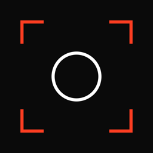

Fujifilm recipes, rangefinder soul.
RecipeLab is a curated reference for Fujifilm camera settings shaped by analogue photography — the tonal character of classic rangefinder bodies and the texture and colour of the film stocks behind them — a starting point for dialling in the look, whatever you shoot.
What it does
47 engineered recipes
Fujifilm cameras let you save custom image-quality settings to named slots. RecipeLab gives you a starting point instead of trial and error — recipes mapped to real film stocks and rangefinder shooting styles.
Cross-referenced against your camera
Every recipe is checked against your sensor generation's real hardware limits. Select your camera and the grid reorders: compatible recipes first, partial matches second, impossible settings hidden.
Annotated, not just listed
Tap any badge on a loaded recipe to read why that specific value was chosen — not just what it is.
Inspired vs Film Stock
Inspired recipes reference a rangefinder body or era. Film Stock recipes match the character of a specific film emulation — Tri-X, Portra, Velvia and more.
Vibe Builder, entirely on-device
Describe a mood and generate a recipe using Apple Intelligence, right on your device. Nothing about your prompt or your camera ever leaves your phone.
Syncs through your own iCloud
Your variations, collections, notes and camera-slot history move between your devices through your own iCloud account, off by default. There is no RecipeLab account and no RecipeLab server.
No account, minimal footprint
RecipeLab has no sign-up, no analytics, and no third-party tracking of any kind. The bundled recipe library ships with the app and never syncs. Everything you create lives on your device and, only if you turn it on, in your own private iCloud database.
The full detail is in the privacy policy — including exactly what leaves the device, and when.